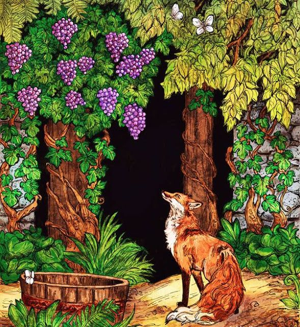

Certa ocasião, uma raposa se encontrava morta de fome, pois estava sem comer há dias. Andava por um pomar quando avistou um belo cacho de uvas.
As uvas negras estavam muito viçosas, maduras e prontas para serem apreciadas. Percebendo que estava sozinha e que o caminho estava livre, aprontou-se para colher aqueles frutos.
Não poupou esforços ao tentar pegá-las, empregou todos os seus conhecimentos e habilidades. Ainda que estivessem fora de seu alcance, não cessou as tentativas.
Depois de tantas investidas fracassadas, além de faminta, agora ela estava exausta e desapontada. Sendo assim, suspirando, deu de ombros, finalmente dando-se por vencida.
Deu meia volta e foi embora. Desolada por conta das tentativas mal sucedidas, a raposa tentou consolar a si mesma dizendo “Na verdade, olhando com mais atenção, consigo perceber que todas as uvas estão estragadas, e não maduras, como elas aparentavam quando as vi pela primeira vez.”
moral:
Assim como a Raposa, muitas pessoas desdenham do que não conseguem, quando no fundo era exatamente aquilo o que desejavam.
Isto porque é mais fácil desprezar do que admitir seus próprios fracassos e/ou correr atrás para superá-los.
Vale lembrar que estamos todos em um eterno aprendizado e que os erros nos fazem enxergar aquilo que precisamos alcançar para nos melhorar, seja no âmbito de conhecimento, competências e habilidades, quanto no âmbito moral e ético.
